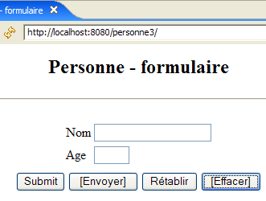
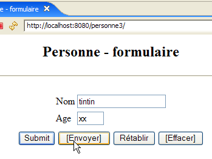
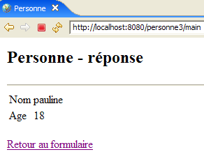

7. MVC-Webanwendung [person] – Version 3
Empfohlene Lektüre in [ref1]: Kapitel 9
7.1. Einleitung
Wir schlagen vor, den an den Browser gesendeten HTML-Seiten JavaScript-Code hinzuzufügen. Es ist der Browser, der den in der angezeigten Seite eingebetteten JavaScript-Code ausführt. Diese Technologie ist unabhängig von derjenigen, die der Webserver zur Erstellung des HTML-Dokuments verwendet (Java/Servlets/JSP, ASP.NET, ASP, PHP, Perl, Python, ...).
[form.jsp]
Die aus dieser Seite generierte Ansicht sieht wie folgt aus:

Die Schaltflächen mit dem Text in einem Feld verwenden JavaScript-Code, der in die HTML-Seite eingebettet ist:
Bezeichnung | HTML-Typ | Funktion |
<submit> | Fungiert wie die Schaltfläche [Absenden] in früheren Versionen: Sendet die eingegebenen Werte an den Controller | |
<button> | Neue Schaltfläche – überprüft die Gültigkeit der eingegebenen Daten lokal, bevor sie an den Controller gesendet werden | |
<reset> | Setzt das Formular auf den Zustand zurück, in dem es ursprünglich vom Browser empfangen wurde | |
<button> | löscht den Inhalt beider Eingabefelder |
Hier ist ein Beispiel für die Verwendung der Schaltflächen [Absenden] und [Löschen]:
 |  |
 |  |
Wir werden außerdem JavaScript-Code verwenden, um den Link [Zurück zum Formular] in den Ansichten [Fehler] und [Antwort] zu verarbeiten. Nehmen wir die Ansicht [Antwort] als Beispiel:
 | 1  |
Der Unterschied liegt in der URL, die unter [1] angezeigt wird. In der vorherigen Version lautete sie:
Hier ist die Aktion nicht mehr Teil der URL, da sie über eine POST-Anfrage statt einer GET-Anfrage gesendet wird. Diese Änderung bedeutet, dass die einzige vom Browser angezeigte URL unabhängig von der angeforderten Aktion [http://localhost:8080/personne3/main] lautet.
7.2. Das Eclipse-Projekt
Um das Eclipse-Projekt [mvc-personne-03] für die Webanwendung [/personne3] zu erstellen, duplizieren Sie das Projekt [mvc-personne-02], indem Sie die in Abschnitt 6.2, Seite 78, beschriebene Vorgehensweise befolgen.
 |  |
7.3. Konfigurieren der Webanwendung [personne3]
Die Datei web.xml für die Anwendung /personne3 sieht wie folgt aus:
<?xml version="1.0" encoding="UTF-8"?>
<web-app id="WebApp_ID" version="2.4"
xmlns="http://java.sun.com/xml/ns/j2ee"
xmlns:xsi="http://www.w3.org/2001/XMLSchema-instance"
xsi:schemaLocation="http://java.sun.com/xml/ns/j2ee http://java.sun.com/xml/ns/j2ee/web-app_2_4.xsd">
<display-name>mvc-personne-03</display-name>
<!-- ServletPersonne -->
<servlet>
<servlet-name>personne</servlet-name>
<servlet-class>
istia.st.servlets.personne.ServletPersonne
</servlet-class>
<init-param>
<param-name>urlReponse</param-name>
<param-value>
/WEB-INF/vues/reponse.jsp
</param-value>
</init-param>
<init-param>
<param-name>urlErreurs</param-name>
<param-value>
/WEB-INF/vues/erreurs.jsp
</param-value>
</init-param>
<init-param>
<param-name>urlFormulaire</param-name>
<param-value>
/WEB-INF/vues/formulaire.jsp
</param-value>
</init-param>
<init-param>
<param-name>lienRetourFormulaire</param-name>
<param-value>
Retour au formulaire
</param-value>
</init-param>
</servlet>
<!-- Mapping ServletPersonne-->
<servlet-mapping>
<servlet-name>personne</servlet-name>
<url-pattern>/main</url-pattern>
</servlet-mapping>
<!-- welcome files -->
<welcome-file-list>
<welcome-file>index.jsp</welcome-file>
</welcome-file-list>
</web-app>
Diese Datei ist bis auf wenige Details identisch mit der in der vorherigen Version:
- Zeile 6: Der Anzeigename der Webanwendung wurde in [mvc-personne-03] geändert
Der Parameter [urlController] wurde entfernt. In der vorherigen Version diente er dazu, das POST-Ziel für die Ansicht [form] festzulegen. In dieser neuen Version ist das Ziel die leere Zeichenfolge, d. h. die vom Browser angezeigte URL. Wir haben erklärt, dass dies immer [http://localhost:8080/personne3/main] sein würde, was wir für die POST-Anfrage aus der Ansicht [form] benötigen.
Die Startseite [index.jsp] ändert sich:
<%@ page language="java" contentType="text/html; charset=ISO-8859-1"
pageEncoding="ISO-8859-1"%>
<!DOCTYPE HTML PUBLIC "-//W3C//DTD HTML 4.01 Transitional//EN">
<%
response.sendRedirect("/personne3/main");
%>
- Zeile 5: Die Seite [index.jsp] leitet den Client zur URL des Controllers [ServletPersonne] in der Anwendung [/personne3] weiter.
7.4. Der Code der Ansicht
7.4.1. Die [Formular]-Ansicht
Diese Ansicht sieht nun wie folgt aus:
Sie wird von der folgenden JSP-Seite [formulaire.jsp] generiert:
<%@ page language="java" contentType="text/html; charset=ISO-8859-1"
pageEncoding="ISO-8859-1"%>
<!DOCTYPE HTML PUBLIC "-//W3C//DTD HTML 4.01 Transitional//EN">
<%// on récupère les données du modèle
String nom = (String) session.getAttribute("nom");
String age = (String) session.getAttribute("age");
%>
<html>
<head>
<title>Personne - formulaire</title>
<script language="javascript">
// -------------------------------
function effacer(){
// on efface les champs de saisie
with(document.frmPersonne){
txtNom.value="";
txtAge.value="";
}//with
}//effacer
// -------------------------------
function envoyer(){
// vérification des paramètres avant de les envoyer
with(document.frmPersonne){
// le nom ne doit pas être vide
champs=/^\s*$/.exec(txtNom.value);
if(champs!=null){
// le nom est vide
alert("Vous devez indiquer un nom");
txtNom.value="";
txtNom.focus();
// retour à l'interface visuelle
return;
}//if
// l'âge doit être un entier positif
champs=/^\s*\d+\s*$/.exec(txtAge.value);
if(champs==null){
// l'âge est incorrect
alert("Age incorrect");
txtAge.focus();
// retour à l'interface visuelle
return;
}//if
// les paramètres sont corrects - on les envoie au serveur
submit();
}//with
}//envoyer
</script>
</head>
<body>
<center>
<h2>Personne - formulaire</h2>
<hr>
<form name="frmPersonne" method="post">
<table>
<tr>
<td>Nom</td>
<td><input name="txtNom" value="<%= nom %>" type="text" size="20"></td>
</tr>
<tr>
<td>Age</td>
<td><input name="txtAge" value="<%= age %>" type="text" size="3"></td>
</tr>
<tr>
</table>
<table>
<tr>
<td><input type="submit" value="Submit"></td>
<td><input type="button" value="[Envoyer]" onclick="envoyer()"></td>
<td><input type="reset" value="Rétablir"></td>
<td><input type="button" value="[Effacer]" onclick="effacer()"></td>
</tr>
</table>
<input type="hidden" name="action" value="validationFormulaire">
</form>
</center>
</body>
</html>
Was gibt’s Neues:
- Zeile 56: Das Formular hat den Namen [frmPersonne]. Dieser Name wird im JavaScript-Code verwendet. Beachten Sie das Fehlen des Attributs [action], was bedeutet, dass das Formular [frmPersonne] an die vom Browser angezeigte URL übermittelt wird.
- Zeile 70: Die Schaltfläche [Submit] hat denselben Zweck wie die Schaltfläche [Envoyer] in früheren Versionen
- Zeile 71: Durch Klicken auf die Schaltfläche [Envoyer] (vom Typ [Button]) wird die in Zeile 24 definierte JavaScript-Funktion [envoyer] ausgeführt
- Zeile 72: Die Funktion der Schaltfläche [Reset] hat sich nicht geändert
- Zeile 73: Ein Klick auf die Schaltfläche [Clear] (Typ [Button]) führt die in Zeile 16 definierte JavaScript-Funktion [clear] aus
Bevor wir auf den JavaScript-Code eingehen, wollen wir uns einige Konventionen ansehen:
JavaScript verwaltet die angezeigte Seite und ihren Inhalt als einen Baum von Objekten, dessen Wurzel das [document]-Objekt ist. Dieses Dokument kann ein oder mehrere Formulare enthalten. [document.frmPersonne] bezieht sich auf das Formular mit dem Namen [frmPersonne], das in Zeile 56 definiert wurde. Dieses Formular enthält ebenfalls Objekte. Eingabefelder sind Teil davon. Somit bezieht sich [document.frmPersonne.txtName] auf das Objekt, das das in Zeile 60 definierte HTML-Eingabefeld darstellt. Das Objekt [txtName] verfügt über verschiedene Eigenschaften, darunter die Eigenschaft [value], die sich auf den Inhalt des Eingabefelds bezieht. Somit bezieht sich [document.frmPersonne.txtName.value] auf den Inhalt des Eingabefelds [txtName].
- Zeilen 16–22: Die JavaScript-Funktion [clear] setzt in den Eingabefeldern [txtName, txtAge] eine leere Zeichenfolge.
- Zeilen 24–49: Die JavaScript-Funktion [submit] überprüft die Gültigkeit der Werte in den Eingabefeldern [txtName, txtAge], bevor sie übermittelt werden. Dazu verwendet sie reguläre Ausdrücke.
- Zeile 28: Prüft, ob der Wert des Eingabefelds [txtNom] mit dem Muster /s* übereinstimmt, was null oder mehr Leerzeichen bedeutet. Ist dies der Fall, hat der Benutzer keinen Namen eingegeben. Bei einer Übereinstimmung mit dem Muster erhält die Variable `champs` einen Wert ungleich dem Nullzeiger; andernfalls erhält sie den Wert null.
- Zeile 29: Wenn eine Übereinstimmung mit dem Muster vorliegt
- Zeile 30: Zeige dem Benutzer eine Meldung an
- Zeile 32: Wir setzen das Feld [txtName] auf eine leere Zeichenkette (es könnte eine Folge von Leerzeichen gegeben haben)
- Zeile 33: Der blinkende Cursor wird auf das Feld [txtName] gesetzt
- Zeile 34: Die Funktion wird beendet. Die eingegebenen Werte werden daher nicht an den Server gesendet.
- Zeilen 38–45: Wir gehen mit dem Feld [txtAge] ähnlich vor
- Zeile 47: Wenn wir diesen Punkt erreichen, bedeutet dies, dass die eingegebenen Werte korrekt sind. Wir senden dann das Formular [frmPersonne] an den Webserver. Alles läuft dann so ab, als hätten wir auf die Schaltfläche [Submit] geklickt.
7.4.2. Die Ansicht [reponse]
Diese Ansicht zeigt die im Formular eingegebenen Werte an, sofern diese gültig sind:
 |  |
Im Vergleich zur vorherigen Version wird die neue Funktion nur angezeigt, wenn Sie den Link [Zurück zum Formular] in der Ansicht [Antwort] verwenden:
|  |
Der Unterschied liegt in der unter [1] angezeigten URL. In der vorherigen Version lautete sie:
Hier ist die Aktion nicht mehr Teil der URL, da sie über eine POST-Anfrage statt einer GET-Anfrage gesendet wird. Die neue JSP-Seite [reponse.jsp] lautet lqqqaaaaaaaaaqqAAAaaa
wie folgt:
<%@ page language="java" contentType="text/html; charset=ISO-8859-1"
pageEncoding="ISO-8859-1"%>
<!DOCTYPE HTML PUBLIC "-//W3C//DTD HTML 4.01 Transitional//EN">
<%
// on récupère les données du modèle
String nom=(String)request.getAttribute("nom");
String age=(String)request.getAttribute("age");
String lienRetourFormulaire=(String)request.getAttribute("lienRetourFormulaire");
%>
<html>
<head>
<title>Personne</title>
</head>
<body>
<h2>Personne - réponse</h2>
<hr>
<table>
<tr>
<td>Nom</td>
<td><%= nom %>
</tr>
<tr>
<td>Age</td>
<td><%= age %>
</tr>
</table>
<br>
<form name="frmPersonne" method="post">
<input type="hidden" name="action" value="retourFormulaire">
</form>
<a href="javascript:document.frmPersonne.submit();">
<%= lienRetourFormulaire %>
</a>
</body>
</html>
Was gibt's Neues:
- Zeilen 35–37: Der Link [Zurück zum Formular] enthält JavaScript. Ein Klick auf diesen Link löst die Ausführung des JavaScript-Codes im Attribut [href] aus. Wie wir bei der Untersuchung von [formulaire.jsp] gesehen haben, wissen wir, dass dieser Code die Werte der Felder <input>, <select> usw. im Formular [frmPersonne] übermittelt.
- Zeilen 32–34: Definieren das Formular [frmPersonne]. Dieses Formular hat nur ein Feld vom Typ <input type="hidden" ...>, d. h. ein verstecktes Feld. Dieses [action]-Feld wird verwendet, um den Namen der auszuführenden Aktion an den Controller zu übergeben, in diesem Fall [retourFormulaire].
7.4.3. Die Ansicht [errors]
Diese Ansicht meldet Eingabefehler im Formular. Die vorgenommene Änderung entspricht der für die Ansicht [response]:
 |  |
Der Unterschied liegt in der unter [1] angezeigten URL. In der vorherigen Version lautete sie:
Hier ist die Aktion nicht mehr Teil der URL, da sie über eine POST-Anfrage statt einer GET-Anfrage gesendet wird. Die neue JSP-Seite [response.jsp] sieht wie folgt aus:
<%@ page language="java" contentType="text/html; charset=ISO-8859-1"
pageEncoding="ISO-8859-1"%>
<!DOCTYPE HTML PUBLIC "-//W3C//DTD HTML 4.01 Transitional//EN">
<%@ page import="java.util.ArrayList" %>
<%
// on récupère les données du modèle
ArrayList erreurs=(ArrayList)request.getAttribute("erreurs");
String lienRetourFormulaire=(String)request.getAttribute("lienRetourFormulaire");
%>
<html>
<head>
<title>Personne</title>
</head>
<body>
<h2>Les erreurs suivantes se sont produites</h2>
<ul>
<%
for(int i=0;i<erreurs.size();i++){
out.println("<li>" + (String) erreurs.get(i) + "</li>\n");
}//for
%>
</ul>
<br>
<form name="frmPersonne" method="post">
<input type="hidden" name="action" value="retourFormulaire">
</form>
<a href="javascript:document.frmPersonne.submit();">
<%= lienRetourFormulaire %>
</a>
</body>
</html>
Was gibt's Neues:
- Zeilen 30–32: die neue Behandlung von Link-Klicks. Die Erläuterungen zu diesem Thema in der Studie zu [response.jsp] gelten auch hier.
7.5. Ansichtstests
Um die vorherigen Ansichten zu testen, duplizieren wir ihre JSP-Seiten im Ordner /WebContent/JSP des Eclipse-Projekts:

Anschließend werden die Seiten im JSP-Ordner wie folgt geändert:
[form.jsp]:
...
<%
// -- test : on crée le modèle de la page
session.setAttribute("nom","tintin");
session.setAttribute("age","30");
%>
<%// on récupère les données du modèle
String nom = (String) session.getAttribute("nom");
String age = (String) session.getAttribute("age");
%>
Die Zeilen 4–5 wurden hinzugefügt, um das von der Seite in den Zeilen 9–10 benötigte Modell zu erstellen.
[reponse.jsp]:
...
<%
// -- test : on crée le modèle de la page
request.setAttribute("nom","milou");
request.setAttribute("age","10");
request.setAttribute("lienRetourFormulaire","Retour au formulaire");
%>
<%
// on récupère les données du modèle
String nom=(String)request.getAttribute("nom");
String age=(String)request.getAttribute("age");
String lienRetourFormulaire=(String)request.getAttribute("lienRetourFormulaire");
%>
...
Die Zeilen 4–6 wurden hinzugefügt, um die von der Seite in den Zeilen 11–13 benötigte Vorlage zu erstellen.
[errors.jsp]:
<%
// -- test : on crée le modèle de la page
ArrayList<String> erreurs1=new ArrayList<String>();
erreurs1.add("erreur1");
erreurs1.add("erreur2");
request.setAttribute("erreurs",erreurs1);
request.setAttribute("lienRetourFormulaire","Retour au formulaire");
%>
<%
// on récupère les données du modèle
ArrayList erreurs=(ArrayList)request.getAttribute("erreurs");
String lienRetourFormulaire=(String)request.getAttribute("lienRetourFormulaire");
%>
Die Zeilen 4–8 wurden hinzugefügt, um das von der Seite in den Zeilen 13–14 benötigte Modell zu erstellen.
Starten Sie Tomcat, falls Sie dies noch nicht getan haben, und rufen Sie dann die folgenden URLs auf:
 |  |
 |
Wir erhalten die erwarteten Aufrufe.
7.6. Der [ServletPersonne]-Controller
Der [ServletPersonne]-Controller der Webanwendung [/personne3] wird die folgenden Aktionen verarbeiten:
Nr. | Anfrage | Herkunft | Verarbeitung |
1 | [GET /person3/hand] | Vom Benutzer eingegebene URL | - Das leere [Formular] absenden |
2 | [POST /person3/main] mit den Parametern [txtName, txtAge, action=validateForm] gesendet | Klicken Sie auf die [Absenden]-Schaltfläche im [Formular] | - Überprüfen Sie die Werte der Parameter [txtName, txtAge] - wenn sie falsch sind, sende die Ansicht [errors(errors)] - wenn sie korrekt sind, sende die Ansicht [response(name,age)] |
3 | [POST /person3/main] mit den Parametern [action=returnForm] gehostet | Klicken Sie auf das Formular [Zurück zum Formular] Ansichten [Antwort] und [Fehler]. | - Die [Formular]-Ansicht mit den zuletzt eingegebenen Werten vorab ausgefüllt senden |
Wir haben daher eine neue Aktion zu behandeln: [POST /person3/main] mit dem übermittelten Parameter [action=returnForm]. Anstelle der alten Aktion [GET /person3/main?action=returnForm].
7.6.1. Controller-Grundgerüst
Das Controller-Gerüst [ServletPersonne] ist identisch mit dem der vorherigen Version.
Was gibt's Neues:
- Zeile 11: Das Array [parameters] enthält nicht mehr den Parameter [urlController], der aus der Datei [web.xml] entfernt wurde.
Die Methoden [init, doValidationFormulaire] bleiben unverändert. Die Methoden [doGet, doInit, doRetourFormulaire] haben sich leicht geändert.
7.6.2. Die Methode [doGet]
Die Methode [doGet] muss die Aktion [POST /person3/main] mit dem übermittelten Parameter [action=returnForm] verarbeiten:
- Zeilen 6–9: Verarbeitung der Aktion [POST /person3/main] mit dem übermittelten Parameter [action=returnForm]
7.6.3. Die Methode [doInit]
Diese Methode verarbeitet die Anfrage Nr. 1 [GET /person3/hand]. Ihr Code lautet wie folgt:
Die Änderung besteht darin, dass die in Zeile 8 angezeigte [form]-Ansicht das [action]-Element nicht mehr in ihrer Vorlage enthält.
7.6.4. Die Methode [doRetourFormulaire]
Diese Methode verarbeitet die Anfrage Nr. 1 [POST /person3/main] mit [action=formSubmit] in den übermittelten Elementen. Ihr Code lautet wie folgt:
Die Änderung besteht darin, dass die in Zeile 14 angezeigte [form]-Ansicht das [action]-Element nicht mehr in ihrer Vorlage enthält.
7.7. Tests
Starten oder starten Sie Tomcat neu, nachdem Sie das Eclipse-Projekt [personne-mvc-03] darin integriert haben. Rufen Sie die URL [http://localhost:8080/personne3] auf und wiederholen Sie dann die in Abschnitt 7.1 als Beispiel gezeigten Tests.